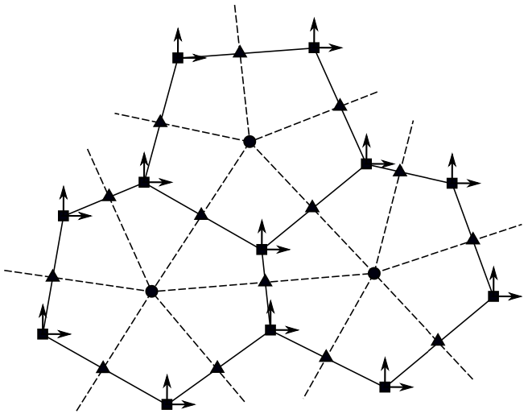

Technical Guide
Primary documentation for MPAS-seaice
See complete citations in References.
E3SM v1 Overview: Golaz et al., JAMES 2019
MPAS-seaice v1: Turner et al., GMD Discussions, 2021.
E3SM v2 Overview: Golaz et al., JAMES 2022
Icepack: Full documentation for E3SM's version of Icepack can be found in E3SM's Icepack readthedocs. The most up-to-date documentation from the CICE Consortium's main Icepack repository is here.
A comprehensive paper describing MPAS-seaice is in preparation.
Meshes
MPAS-Seaice is the sea ice component of E3SMv1. MPAS-Seaice and MPAS-Ocean share identical meshes, but MPAS-Seaice uses B-grid discretizations (Arakawa & Lamb, 1977) with sea ice concentration, volume, and tracers defined at cell centers and velocity defined at cell vertices.
The MPAS mesh system requires the definition of seven elements. These seven elements are composed of two types of cells, two types of lines, and three types of points. These elements can be defined on either the plane or the surface of the sphere. The two types of cells form two meshes, a primal mesh composed of Voronoi regions and a dual mesh composed of Delaunay triangles. Each corner of a primal mesh cell is uniquely associated with the "center" of a dual mesh cell and vice versa. The boundary of a given primal mesh cell is composed of the set of lines that connect the centers of the dual mesh cells. Similarly, the boundary of a given dual mesh cell is composed of the set of lines that connect the center points of the associated primal mesh cells. A line segment that connects two primal mesh cell centers is uniquely associated with a line seqment that connects two dual mesh cell centers. We assume that these two line seqments cross and are orthogonal. Since the two line seqments crossing are othogonal, they form a convenient local coordinate system for each edge.  Figure: Sample from an MPAS mesh showing the primal mesh (solid lines), the dual mesh (dashed), and velocity components aligned with a locally Cartesian coordinate system (east/north).
Velocity and Stresses
Velocity components at cell vertices are not aligned with the mesh, as in sea ice models with structured meshes and quadrilateral cells. Instead, the velocity components are aligned with a spherical coordinate system that is locally Cartesian, eastwards (u) and northwards (v), irrespective of the orientation of edges joining that vertex. Such a definition, however, would result in a convergence of v components at the geographic North Pole and strong metric terms in the velocity solution. Consequently, in addition, these definitions of u and v are rotated so that their pole lies on the geographical equator at 0 deg longitude.
Velocities are determined by solving the sea ice momentum equation (Hibler, 1979; Hunke & Dukowicz, 1997). During coupled simulations the ocean model provides the ocean surface tilt term; the only other term that depends on the properties of the horizontal grid is the divergence of internal stress. Therefore only this stress term must be adapted for use on MPAS meshes. Otherwise the velocity solver is identical to that in CICE’s standard EVP approach. Determination of the divergence of the internal stress can be broken down into three stages:
-
The strain rate tensor is determined from the velocity field.
-
The stress tensor at a point is determined, through a constitutive relation, from the strain rate tensor at that point.
-
The divergence of this stress tensor is calculated.
Two schemes to calculate the strain rate tensor and the divergence of internal stress on MPAS meshes are implemented in MPAS-Seaice, a variational scheme based on that used in CICE (Hunke and Dukowicz, 2002), and a weak scheme that uses the line integral forms of the symmetric gradient and divergence operators. The variational scheme is based on the fact that over the entire domain, Ω, and ignoring boundary effects, the total work done by the internal stress is equal to the dissipation of mechanical energy. Instead of the bilinear basis functions used by CICE, MPAS-Seaice uses Wachspress basis functions (Dasgupta, 2003), which are integrated with the quadrature rules of Dunavant (1985).
Horizontal Transport of Ice Area Fraction and Tracers
Horizontal transport of ice concentration, volume, and tracers is achieved with an incremental remapping (IR) scheme similar to that described in Dukowicz and Baumgardner (2000), Lipscomb and Hunke (2004), and Lipscomb and Ringler (2005). For MPAS-Seaice the IR scheme was generalized to work on either the standard MPAS mesh (hexagons and other n-gons of varying sizes, with a vertex degree of 3, or a quadrilateral mesh with a vertex degree of 4 as in CICE. Since MPAS meshes are unstructured, the IR scheme had to be rewritten from scratch. Most of the code is mesh-agnostic, but a small amount of code is specific to quad meshes. The transport equations describe conservation of quantities such as volume and energy. Fractional ice area (also known as sea ice concentration) is a mass-like quantity whose transport equation forms the basis for all other transported quantities in the model. In particular, ice volume is the product of ice area and thickness; therefore thickness is treated as a tracer on ice area, transported with the continuity equation for conservation of volume. Likewise, snow depth is carried as a tracer on ice area via a conservation of snow volume equation. Ice thickness and snow depth are referred to as “type 1” tracers (carried directly on ice area). Ice and snow enthalpy in each vertical layer are type 2 tracers, carried on ice and snow volume. When run with advanced options (e.g., active melt ponds and biogeochemistry), MPAS-Seaice advects tracers up to type 3. Thus, the mass-like field (area) is the “parent field” for type 1 tracers; type 1 tracers are parents of type 2; and type 2 tracers are parents of type 3. Sources and sinks of mass and tracers (e.g., ice growth and melting) are treated separately from transport.
The transport time step is limited by the requirement that trajectories projected backward from vertices are confined to the cells sharing the vertex (i.e., 3 cells for the standard MPAS mesh and 4 for the quad mesh). This is what is meant by incremental as opposed to general remapping. For highly divergent velocity fields, the maximum time step may have to be reduced by a factor of 2 to ensure that trajectories do not cross. The incremental remapping algorithm consists of the following steps:
- Given mean values of the ice area and tracer fields in each grid cell and thickness category, construct linear approximations of these fields. Limit the field gradients to preserve mono- tonicity.
- Given ice velocities at grid cell vertices, identify departure regions for the transport across each cell edge. Divide these departure regions into triangles and compute the coordinates of the triangle vertices.
- Integrate the area and tracer fields over the departure triangles to obtain the area, volume, and other conserved quantities transported across each cell edge.
- Given these transports, update the area and tracers.
Since all fields are transported by the same velocity field, the second step is done only once per time step. The other steps are repeated for each field.
With advanced physics and biogeochemistry (BGC) options, MPAS-Seaice can be configured to include numerous tracer fields, each of which is advected in every thickness category, and many of which are defined in each vertical ice or snow layer. In order to accommodate different tracer combinations and make it easy to add new tracers, the tracer fields are organized in a linked list that depends on which physics and BGC packages are active. The list is arranged with fractional ice area first, followed by the type 1 tracers, type 2 tracers, and finally type 3 tracers. In this way, values computed for parent tracers are always available when needed for computations involving child tracers.
Column Physics
The Icepack software has replaced the original colpkg column physics code in MPAS-seaice. The config_column_physics_type = 'column_package' option is still available but is no longer being supported in MPAS-seaice.
Because of the strong thermal gradients between the (cold) atmosphere and (relatively warm) oceans in polar regions, a large portion of the physics in sea ice models can be described in a vertical column, without reference to neighboring grid cells. MPAS-Seaice shares the same column physics code as CICE through the Icepack library (Hunke et al., 2018), which is maintained by the CICE Consortium. This code includes several options for simulating sea ice thermodynamics, mechanical redistribution (ridging) and associated area and thickness changes. In addition, the model supports a number of tracers, including thickness, enthalpy, ice age, first-year ice area, deformed ice area and volume, melt ponds, snow properties and biogeochemistry.
Icepack is implemented in MPAS-seaice as a git submodule. Icepack consists of three independent parts, the column physics code, the Icepack driver that supports stand-alone testing of the column physics code, and the Icepack scripts that build and test the Icepack model. E3SM uses only the column physics code, which is called for each ocean grid cell. Icepack’s own driver and testing scripts are used when preparing new developments to be merged back to the CICE Consortium’s Icepack repository.
Icepack includes sophisticated vertical physics and biogeochemical schemes, which include vertical thermodynamics schemes (Bitz and Lipscomb, 1999; Turner et al., 2013; Turner and Hunke, 2015), melt-pond parameterizations (Flocco et al., 2010; Hunke et al., 2013), a delta-Eddington radiation scheme (Briegleb and Light, 2007; Holland et al., 2012a), schemes for transport in thickness space (Lipscomb, 2001), and representations of mechanical redistribution (Lipscomb et al., 2007).
Full documentation for E3SM's version of Icepack can be found in E3SM's Icepack readthedocs. The most up-to-date documentation from the CICE Consortium's main Icepack repository is here.
Thermodynamics
In its default configuration, MPAS-Seaice uses the “mushy layer” vertical thermodynamics scheme of Turner et al. (2013) and Turner and Hunke (2015). The mushy layer formulation describes the sea ice as a two-phase system of crystalline, fresh ice and liquid brine. Enthalpy depends on temperature and salinity, all of which are prognostic variables. The mushy layer equations are derived from conservation of energy, conservation of salt, an ice-brine liquidus relation that determines the temperature- and salinity-dependent phase, and Darcy flow through a porous medium to describe the vertical movement of brine within the ice. When or where the ice is cold, brine pockets are isolated from each other, but warmer temperatures cause the brine pockets to expand and connect into vertical channels in which meltwater, seawater, biology and nutrients may move through the ice.
Melt Ponds
MPAS-seaice uses the level-ice melt pond scheme of Hunke et al. (2013). The ponds are carried as tracers on the level (undeformed) ice area of each thickness category, thus limiting their spatial extent based on the simulated sea ice topography. This limiting is meant to approximate the horizontal drainage of melt water into depressions in ice floes. The ponds evolve according to physically based process descriptions, assuming a thickness-area ratio for changes in pond volume. Melt pond processes include addition of liquid water from rain, melting snow and melting surface ice, drainage of pond water when its weight pushes the ice surface below sea level or when the ice interior becomes permeable, and refreezing of the pond water. If snow falls after a layer of ice has formed on the ponds, the snow may block sunlight from reaching the ponds below. When melt water forms with snow still on the ice, the water is assumed to infiltrate the snow. If there is enough water to fill the air spaces within the snowpack, then the pond becomes visible above the snow, thus decreasing the albedo and ultimately causing the snow to melt faster. The albedo also decreases as snow depth decreases, and thus a thin layer of snow remaining above a pond-saturated layer of snow will have a lower albedo than if the melt water were not present. Level-ice melt ponds are “virtual” in the sense that rain and meltwater is sent to the ocean immediately, and the tracers are only used thereafter to adjust the radiative calculations as if the ponds were present. The delta-Eddington radiative transfer scheme must be active for this purpose.
Radiation
The Delta-Eddington radiation scheme of Briegleb & Light (2007) has been updated to the Dang et al. (2019) SNICAR-AD model, to ensure radiative consistency across all snow surfaces in E3SM, including on land, ice sheets and sea ice. The SNICAR-AD radiative transfer code includes five-band snow single-scattering properties, two-stream Delta-Eddington approximation with the adding–doubling technique, and parameterization for correcting the near-infrared (NIR) snow albedo biases when solar zenith angle exceeds 75 degrees (Dang et al., 2019).
Snow
A new snow-on-sea-ice morphology has been added to E3SMv2 that includes the effects of wind redistribution: losses to leads and meltponds, and the piling of snow against ridges. Snow grain radius, now a prognosed tracer field on sea ice, evolves according to temperature gradient and wet snow metamorphism and feeds back to the SNICAR-AD radiative model up to a dry maximum of 2800 μm. Fresh snow falls at a grain radius of 54.5 μm, and five vertical snow layers replace the previous single snow layer atop each of the five sea ice thickness categories retained from E3SMv1.
A paper describing the advanced snow physics is in preparation.
Biogeochemistry
This section is under construction, pending the full merge of BGC codes in Icepack and the older column physics package.
Coupling of MPAS-seaice within E3SM
This description is taken from the v1 overview paper (Golaz et al. 2019). Refer to that paper for further information. Coupling of the sea ice component to the ocean takes advantage of z star ocean coordinates and is a departure from the coupling of CICE and POP (Parallel Ocean Program) in CESM1. The weight of sea ice contributes to the ocean's barotropic mode, notably affecting the free surface over continental shelves. In shallow water depths at or less than the floating ice draft, the weight passed to the ocean model is limited to prevent evacuation of the underlying liquid column. When frazil ice forms in the ocean model, the volume of newly formed crystals is passed to the sea ice model with a fixed salinity of 4 PSU, rather than exchanging a freezing potential as in other models. Future versions of E3SM will permit progressive brine drainage to the ocean from the mushy layer physics used in MPAS-Seaice. For E3SMv1, brine drainage occurs internally in MPAS-Seaice for thermodynamic calculations, but for the sake of freshwater coupling, the ocean model only receives mass fluxes back from melted sea ice at the fixed salinity that it originally passed to its cryospheric counterpart (4 PSU). The ocean temperature immediately under the ice is the same as the liquid phase in the lowest layer of the sea ice model and is not fixed at −1.8 ◦C as is typical of previous generation coupled models. For the current version, we have addressed these long-standing ocean-ice coupling issues identified by the modeling community: explicit sea ice mass and salt exchange, a pressure force of the ice on the ocean, a basal sea ice temperature consistent with the ocean model's equation of state, and resolved inertial oscillations.
This paragraph, taken from the v2 overview paper (Golaz et al. 2022), describes changes since v1. The most significant improvement to the sea ice climate since E3SMv1 was achieved with coupling changes associated with mushy-layer thermodynamics. Whereas the basal temperature of the ice was held fixed at -1.8◦C in E3SMv1, the new version of the model assumes the mushy liquidus basal temperature from the sea ice as described by Turner & Hunke (2015). Conversion of frazil ice from MPAS-Ocean with a fixed reference salinity of 4 PSU to the mushy layer now conserves to computational accuracy over a 500-year control integration. This was achieved by exchanging additional mass between the upper ocean and sea ice model to accommodate an assumed 25% mushy liquid content, assumed from heat and mass transferred adiabatically from the MPAS-Ocean frazil scheme active from a depth of 100 m. In addition to achieving perfect heat and mass conservation between sea ice and ocean models, this improvement greatly reduces a negative sea ice thickness bias in the summer Arctic reported by Golaz et al. (2019) for E3SMv1; it only minimally impacts Southern Ocean sea ice mass that was better simulated as compared to northern hemisphere sea ice in E3SMv1. Note that E3SM does not use virtual ice-ocean fluxes, but instead full mass and heat flux exchange consistent with a Boussinesq ocean model. Radiative coupling with the atmosphere still integrates across just two bands (visible and NIR) separated at 700nm, which does not fully exploit the five-band capability available in the delta-Eddington scheme.
Prescribed Ice Mode
E3SM also includes a prescribed-extent ice mode for MPAS-SeaIce based the CESM implementation. This mode is needed for Atmospheric Model Intercomparison Project (AMIP) style simulations where a full prognostic sea ice model is not desired but sea ice surface fluxes, albedos, snow depth, and surface temperature are needed by the atmosphere model. These fields are calculated by the vertical thermodynamics module of the sea ice component. The prescribed-ice mode is intended for atmosphere sensitivity experiments and does not conserve energy or mass. In this mode, sea ice thermodynamics is active but sea ice dynamics are disabled, and at each time step ice area and thickness are reset to specified values. Ice area is interpolated in time and space from an input data set, while ice thickness in grid cells containing sea ice is set to 2 m in the Northern hemisphere and 1 m in the Southern hemisphere. During each area and thickness adjustment, snow volume preserves the snow thickness prognosed in the previous time step. Snow temperatures are reset to the surface temperature, as prognosed in the previous time step, while ice temperatures are set so that the ice temperature gradient is linear, with the ice temperature at the top equal to the prognosed surface temperature, and equal to the sea freezing temperature at the base of the ice. The vertical ice salinity profile is reset to the profile from Bitz & Lipscomb (1999). The prescribed-ice mode implemented in MPAS-SeaIce can now replace that in CICE in such configurations, but CICE continues to be used for those requiring exceptional computational efficiency.